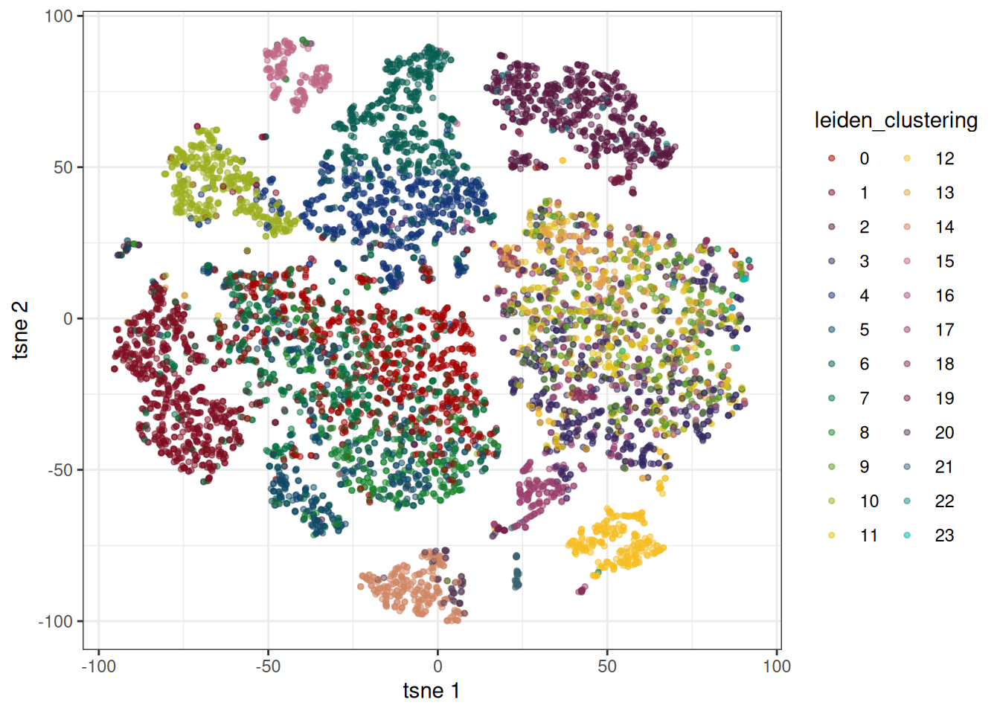
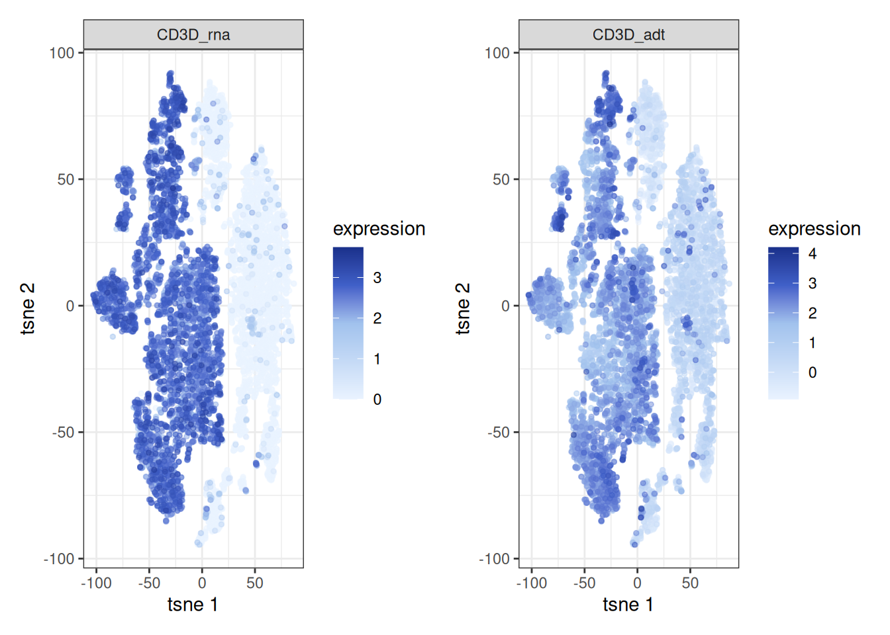

library(bixverse)
library(bixverse.plots)
library(patchwork)
library(ggplot2)
library(data.table)
#>
#> Attaching package: 'data.table'
#> The following object is masked from 'package:base':
#>
#> %notin%Multi-modal single cell analysis with bixverse
2026-06-28
Intro
This vignette walks through a multi-modal single cell workflow on a CITE-seq data set (10x’s 10k Human PBMC TotalSeq-B). The general bixverse philosophy — do not keep things in memory if you do not have to, keep heavy lifting in Rust, only round-trip to R when the user actually needs to look at something — still applies. The bit that changes is that there is now a second modality hanging off the main class: Antibody-Derived Tags (ADT). ATAC is on the roadmap but not yet wired up.
Before going further, please read the design choices and the introductory vignette if you have not already. This vignette assumes you are comfortable with the SingleCells class, the on-disk count storage, and the cells-to-keep logic.
Loading the data
A 10x Cell Ranger H5 with multiple feature types contains both the RNA and the ADT counts in one file, separated by feature_type. We peek at the metadata first to confirm what is in there before committing to anything.
# NEEDS UPDATE
h5_10x_path <- download_pbmc_totalseq_data()
tempdir_10x_total_seq <- tempdir()EDA
h5_metadata <- read_tenx_h5_metadata(h5_10x_path)
h5_metadata$feature_types
#> Antibody Capture Gene Expression
#> 140 18082Two feature types: gene expression and antibody capture. Good, we have both modalities to play with.
Loading in the RNA
The RNA goes through SingleCellsMultiModal, which is essentially the same class as SingleCells with extra slots for adt_counts (and, later, an atac connection). RNA loading and storage are identical to the single-modal case: counts get pre-filtered, normalised, transposed, and written to the two binary files on disk.
sc_object <- SingleCellsMultiModal(dir_data = tempdir_10x_total_seq)
sc_object <- load_tenx_h5(object = sc_object, h5_path = h5_10x_path)
#> Using light streaming for the CSR to CSC conversion.
#> Loading barcodes from 10x h5 into the DuckDB.
#> Loading features from 10x h5 into the DuckDB.
head(sc_object)
#> cell_idx cell_id nnz lib_size to_keep
#> <int> <char> <num> <num> <lgcl>
#> 1: 1 AAACAAGCACCATACT-1 2499 4486 TRUE
#> 2: 2 AAACAAGCACGTAATG-1 2759 4902 TRUE
#> 3: 3 AAACAAGCATGCAATG-1 3512 7639 TRUE
#> 4: 4 AAACAAGCATTTGGGA-1 2973 5446 TRUE
#> 5: 5 AAACCAATCAAGTTTC-1 4419 13000 TRUE
#> 6: 6 AAACCAATCAGGGATT-1 3765 8270 TRUELoading in the ADT counts
The ADT design philosophy differs from RNA. Protein panels are tiny: dozens of antibodies, sometimes a couple of hundred for the larger commercial panels. The cost-benefit calculus that justifies the on-disk binary format for RNA just does not hold here. Even a million cells times 200 proteins fits in memory without breaking a sweat. So the whole ADTCounts object — raw counts, normalised counts, a bit of metadata — lives in memory as a plain matrix. The saving is in code complexity rather than RAM.
For normalisation, you currently have two options:
-
CLR (centred log-ratio): the Seurat default. Comes in two flavours via
seurat_clr: the original CLR (allows negatives) and the modified Seurat-style version (does not). - DSB (denoised and scaled by background): from Mulè et al., 2022. More principled if you have empty droplets to estimate the protein background; falls back to a 2-component k-means on log counts if you do not (the “ModelNegativeADTnorm” path).
Isotype controls help DSB tease apart per-cell technical noise from true biological signal. detect_adt_isotypes() regexes the obvious patterns (IgG.*, Ig.*ctrl, etc.) and is fine for standard TotalSeq panels; for anything unusual just pass the column names directly via isotype_names.
adt_counts <- read_tenx_h5_adt(f_path = h5_10x_path)
iso <- detect_adt_isotypes(colnames(adt_counts))
sc_object <- add_adt_counts_sc(
object = sc_object,
adt_counts = adt_counts,
method = "dsb",
dsb_params = params_sc_dsb(
use_isotype_controls = TRUE,
quantile_low = 0.01,
quantile_high = 1.0
),
isotype_names = iso
)QC
Low quality cells
QC runs jointly across modalities. The RNA loader already populated lib_size and nnz on the obs table; add_adt_counts_sc() added adt_lib_size and adt_nnz on top. We feed all four into MAD-based outlier detection. Two-sided is sensible across the board — extremely high ADT library size can also flag doublets or aggregates, not just dead cells.
qc_df <- sc_object[[c(
"cell_id",
"lib_size",
"nnz",
"adt_lib_size",
"adt_nnz"
)]]
metrics <- list(
log10_rna_lib_size = log10(qc_df$lib_size),
log10_rna_nnz = log10(qc_df$nnz),
log10_adt_lib_size = log10(qc_df$adt_lib_size),
log10_adt_nnz = log10(qc_df$adt_nnz)
)
directions <- c(
log10_rna_lib_size = "twosided",
log10_rna_nnz = "twosided",
log10_adt_lib_size = "twosided",
log10_adt_nnz = "twosided"
)
qc <- run_cell_qc(
metrics = metrics,
cells_to_keep = get_cells_to_keep(sc_object),
directions = directions,
threshold = 3
)
qc_obs <- get_data(qc)
plots <- violin_plot_sc(qc)
plots$log10_rna_lib_size + plots$log10_adt_lib_size
sc_object[["outlier"]] <- qc$combined
cells_to_keep <- qc_df[!qc$combined, cell_id]
sc_object <- set_cells_to_keep(sc_object, cells_to_keep)Standard workflows
For the initial steps, the two modalities are treated independently. Each gets its own dimensionality reduction, kNN graph, and embeddings. The modality argument routes to the relevant Rust kernel and stores results in the right cache slot: sc_cache for RNA, adt_cache for ADT. Cross-modal integration comes later, in the WNN section.
RNA
Standard recipe: HVGs, PCA, neighbours, Leiden, tSNE.
sc_object <- find_hvg_sc(
object = sc_object,
hvg_no = 2000L
)
sc_object <- calculate_pca_sc(
object = sc_object,
no_pcs = 30L
)
#> Using dense SVD solving on scaled data on 2000 HVG.
# the data is so tiny that exhaustive kNN search is faster than building
# an approximate nearest neighbour index
sc_object <- find_neighbours_sc(
object = sc_object,
no_embd_to_use = 16L,
neighbours_params = params_sc_neighbours(
knn = list(knn_method = "exhaustive")
)
)
#>
#> Generating sNN graph (full: TRUE).
#> Transforming sNN data to igraph.
sc_object <- find_clusters_sc(sc_object)
head(sc_object)
#> cell_idx cell_id nnz lib_size to_keep adt_nnz adt_lib_size
#> <int> <char> <num> <num> <lgcl> <num> <num>
#> 1: 1 AAACAAGCACCATACT-1 2499 4486 TRUE 115 3007
#> 2: 2 AAACAAGCACGTAATG-1 2759 4902 TRUE 101 1794
#> 3: 3 AAACAAGCATGCAATG-1 3512 7639 TRUE 125 6316
#> 4: 4 AAACAAGCATTTGGGA-1 2973 5446 TRUE 119 3118
#> 5: 5 AAACCAATCAAGTTTC-1 4419 13000 TRUE 136 12419
#> 6: 6 AAACCAATCAGGGATT-1 3765 8270 TRUE 128 4936
#> outlier leiden_clustering
#> <lgcl> <int>
#> 1: FALSE 0
#> 2: FALSE 4
#> 3: FALSE 0
#> 4: FALSE 7
#> 5: FALSE 11
#> 6: FALSE 0
sc_object <- tsne_sc(
sc_object,
modality = "rna"
)
#> Running t-SNE.
embedding_plot_sc(
sc_object,
embedding = "tsne",
colour_by = "leiden_clustering",
discrete = TRUE,
point_size = 0.5
)
ADT
For ADT we skip HVG selection — there is nothing to select from in a panel of thirty-odd antibodies — and feed the panel directly into PCA, minus the isotype controls (they only add background noise). Otherwise the recipe is the same as for RNA, with modality = "adt" doing the routing.
sc_object <- calculate_pca_adt_sc(
object = sc_object,
no_pcs = 15L,
features = remove_adt_isotypes(get_adt_names(sc_object))
)
# the data is so tiny that exhaustive kNN search is faster than building
# an approximate nearest neighbour index
sc_object <- find_neighbours_sc(
object = sc_object,
neighbours_params = params_sc_neighbours(
knn = list(knn_method = "exhaustive")
),
modality = "adt"
)
#>
#> Generating sNN graph (full: TRUE).
#> Transforming sNN data to igraph.
sc_object <- tsne_sc(
sc_object,
modality = "adt"
)
#> Running t-SNE.
feature_plot_sc(
sc_object,
features = "CD3D",
embedding = "tsne",
expr_modality = "adt",
embd_modality = "adt",
point_size = 1
) +
theme_bx()
Plotting
bixverse.plots has a few helpers tuned to multi-modal data. The main mechanism is that the plotting functions take an expr_modality (where the values come from) and an embd_modality (which embedding to overlay them on) separately. That split is what lets you colour an ADT-derived UMAP by RNA expression, or any other combination.
Features against each other
The classic CITE-seq sanity check: does the protein signal match the mRNA signal where you would expect it to? feature_scatter_plot_sc() takes two features with optional _rna / _adt suffixes, so you can mix modalities freely. mRNA tends to be sparse and noisy; ADT tends to be smoother but with more background. A scatter against each other surfaces both effects in one picture.
feature_scatter_plot_sc(
object = sc_object,
feature_1 = "ENSG00000167286_rna",
feature_2 = "CD3D_adt"
) +
theme_bx() +
xlab("CD3D mRNA") +
ylab("CD3D ADT")
feature_scatter_plot_sc(
object = sc_object,
feature_1 = "ENSG00000177455_rna",
feature_2 = "CD19_adt"
) +
theme_bx() +
xlab("CD19 mRNA") +
ylab("CD19 ADT")
Embeddings
Same idea on the embedding side. The cell below paints RNA expression of CD3D onto an ADT-derived tSNE. feature_labels is the cleanest way to render a human-readable label without renaming columns upstream.
feature_plot_sc(
sc_object,
features = "ENSG00000167286",
feature_labels = c(ENSG00000167286 = "CD3D_rna"),
embedding = "tsne",
expr_modality = "rna",
embd_modality = "adt",
point_size = 1
) +
theme_bx()
For the reverse — ADT expression on the same ADT embedding — features just go by their panel name:
feature_plot_sc(
sc_object,
features = "CD19",
embedding = "tsne",
expr_modality = "adt",
embd_modality = "adt",
point_size = 1
)
embedding_plot_sc() accepts the same embd_modality argument when you want to overlay obs columns (clusters, donor IDs, cell type calls) on a particular modality’s embedding:
embedding_plot_sc(
object = sc_object,
embedding = "tsne",
embd_modality = "adt",
colour_by = "leiden_clustering",
discrete = TRUE,
point_size = 1
)
WNN
So far we have looked at each modality in isolation. For a single cell-type assignment that uses both, you want a joint representation. The current implementation in bixverse is Weighted Nearest Neighbours (WNN) from Hao et al., 2021, the same method Seurat v4 introduced.
The intuition is that different modalities carry different information for different cells. For something like monocyte versus B cell, the RNA signal is very strong. For CD4 versus CD8 T cell subsets, the protein signal is much cleaner — the mRNAs are barely differential at that resolution. WNN formalises this: for each cell, it asks how well that cell’s neighbours in one modality predict its profile in the other modality, and uses the answer to weight the two modalities per cell. The weighted neighbours are then merged into a single joint graph.
The whole thing runs in Rust — per-cell weights, neighbour selection, graph merging — so it scales to hundreds of thousands of cells comfortably. The resulting graph lands under other_data$wnn and can be embedded just like any other modality.
sc_object <- generate_wnn_graph_sc(
sc_object,
wnn_params = params_sc_wnn(sd_scale = 1)
)
#> Running WNN graph generation.
#> Generating sNN graph (full: TRUE) from WNN graph.
#> Transforming sNN data to igraph.
sc_object <- tsne_sc(
sc_object,
modality = "wnn"
)
#> Running t-SNE.
#> Using provided kNN graph.A nice sanity check is to look at the same marker from both modalities, projected onto the WNN embedding. If WNN is doing its job, the two pictures should largely agree — even though they come from completely independent measurements.
p1 <- feature_plot_sc(
sc_object,
features = "ENSG00000167286",
feature_labels = c(ENSG00000167286 = "CD3D_rna"),
embedding = "tsne",
expr_modality = "rna",
embd_modality = "wnn",
point_size = 1
)
p2 <- feature_plot_sc(
sc_object,
features = "CD3D",
feature_labels = c(CD3D = "CD3D_adt"),
embedding = "tsne",
expr_modality = "adt",
embd_modality = "wnn",
point_size = 1
)
p1 + p2
From here, the rest of the pipeline (clustering, marker detection, cell type annotation) works exactly as in the standard vignette — just point the relevant functions at the WNN graph instead of the RNA one.